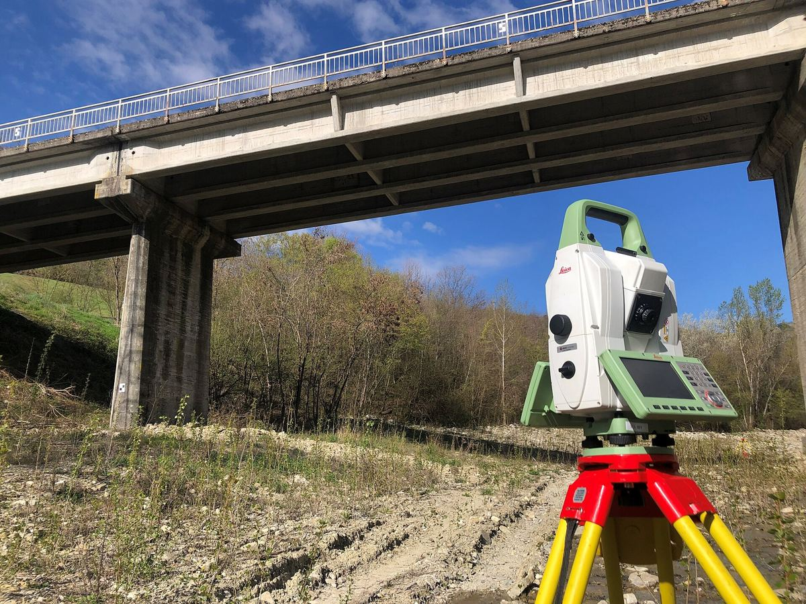

Misi 02Foto ilustrasiPenelitian
Kegiatan penelitian tingkat nasional maupun internasional di bidang rekayasa sipil yang mendorong pengembangan dan penyebarluasan keilmuan perencanaan dan perancangan.
- Lima bidang kajian, dari struktur hingga manajemen konstruksi
- Didukung laboratorium praktikum
- Publikasi di E-Journal UNMEKA